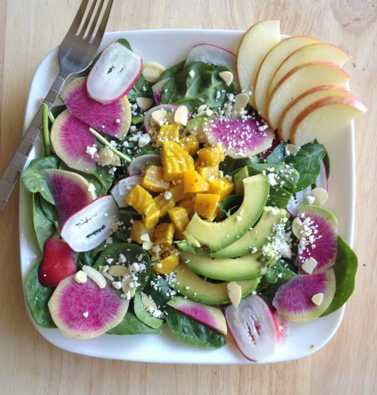

COLORFUL SPRING SALAD WITH RADISHES & BEETS

I love going to my local farmers market to buy fresh produce. Although shopping there is not always the cheapest option, I can always depend on the farmers market to introduce me to new varieties of fruits and vegetables. Take...
INGREDIENTS
- 1 1/2 cup baby spinach
- 1/3 cup roasted golden beets (see directions for roasting beets)
- 1 medium watermelon radish, thinly sliced
- 2 medium French breakfast radishes, thinly sliced
- 1/4 medium avocado, sliced
- 1/3 medium fuji apple, sliced
- 1 TBS feta cheese
- 1/2 TBS sliced roasted almonds
- 1 to 2 TBS olive oil (for roasting beets)
- salt and pepper to taste
INSTRUCTIONS
- Preheat the oven to 375ºF. Line a baking sheet with parchment paper or a silicone mat.
- Peel 3-4 medium beets and dice them into small cubes.
- In a medium-sized bowl, toss the beets with 1 to 2 tablespoons of olive oil. Sprinkle a dash of salt on the beets and mix again. Spread the beets onto a baking sheet in a single layer.
- Bake for about 30 to 35 minutes, or until they can be easily pierced with a fork.
- In a small bowl, mix the spinach, radishes, 1/3 cup roasted beets, feta, and sliced almonds together.
- Pour the salad onto a plate and top with sliced avocado and apples.
- Refrigerate any leftover roasted beets in an airtight container.
- Season salad with salt and pepper and enjoy with your dressing of choice or my low-fat miso sesame dressing!
Back on top
Back Home